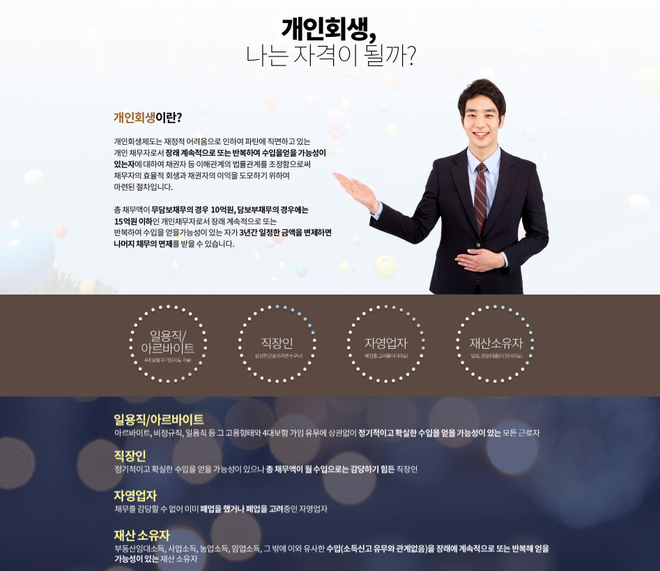

채무 문제를 해결하기 위해 개인회생을 알아보는 분들은 개인회생 이후 신용회복이 어떻게 이루어지는지도 함께 궁금해하는 경우가 많습니다. 실제 신용상태는 개인회생 진행 여부뿐 아니라 금융거래 이력과 변제 상황 등 여러 요소의 영향을 받을 수 있습니다.
개인회생신용회복은 어떤 과정을 의미할까요?
개인회생은 일정한 소득을 바탕으로 법원이 인정한 변제계획에 따라 채무를 변제하는 절차입니다.
개인회생을 통해 채무 문제가 정리된 이후에는 자신의 금융생활을 다시 안정적으로 관리해가는 과정이 필요할 수 있습니다.
개인회생 진행 중에는 신용상태를 함께 관리해야 합니다
개인회생절차가 진행되는 동안에는 기존 금융거래와 신용정보에 영향을 받을 수 있습니다.
따라서 개인회생을 신청할 때는 채무조정 효과만 보는 것이 아니라 절차가 진행되는 동안 금융생활에 어떤 변화가 있을 수 있는지도 확인하는 것이 좋습니다.
📋 변제계획
정해진 변제계획을 꾸준하게 이행하는 것이 중요합니다.
💳 금융거래
개인회생 진행 중 금융거래에 제한이나 변화가 있을 수 있습니다.
📅 납부관리
변제금의 납부일과 납부내역을 지속적으로 관리하세요.
📈 장기관리
단기간보다는 장기적인 금융생활 관리가 중요할 수 있습니다.
변제 완료 이후에도 신용관리가 필요합니다
개인회생 변제계획을 모두 이행했다고 해서 신용상태가 즉시 이전 수준으로 회복된다고 단정하기는 어렵습니다.
이후에도 안정적인 소득과 정상적인 금융거래 이력을 꾸준히 관리하면서 자신의 신용상태를 장기적으로 살펴보는 것이 좋습니다.

신용회복을 위해 어떤 부분을 관리하면 좋을까요?
개인회생 이후에는 안정적인 금융생활을 이어가기 위해 소득과 지출을 꾸준히 관리하는 것이 좋습니다.
새로운 연체를 만들지 않고 자신의 상환 능력을 넘어서는 금융거래를 피하는 것도 중요할 수 있습니다.
개인회생신용회복 상담 전 확인하면 좋은 내용
개인회생을 알아보거나 현재 절차를 진행하고 있다면 자신의 채무와 신용상태를 함께 정리해두는 것이 좋습니다.
실제 신용상태 변화와 금융거래 가능 여부는 개인회생 진행 결과와 변제 이력, 금융기관 및 신용평가 기준 등에 따라 달라질 수 있습니다.